– Bernard Marr
– Forrester
– David Wellman
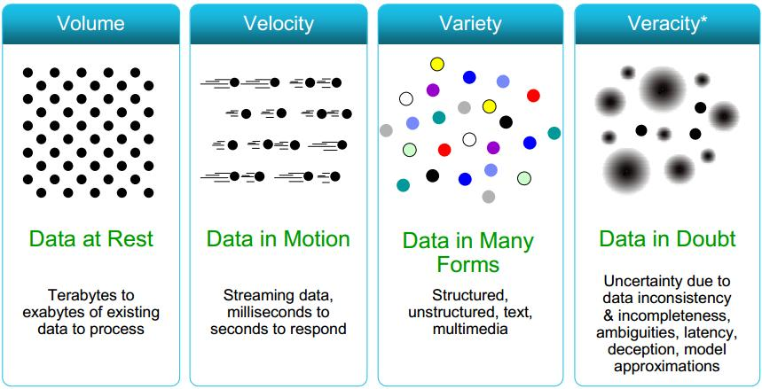
Source: www.cs.kent.edu/~jin/BigData/Lecture1.pptx
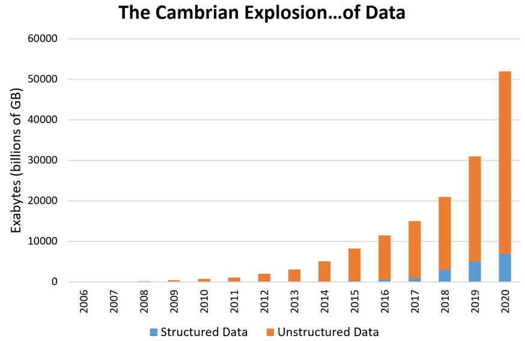

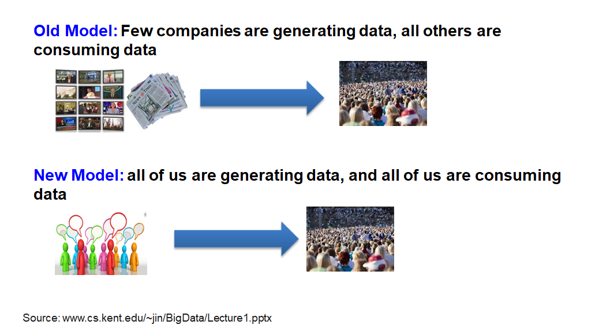
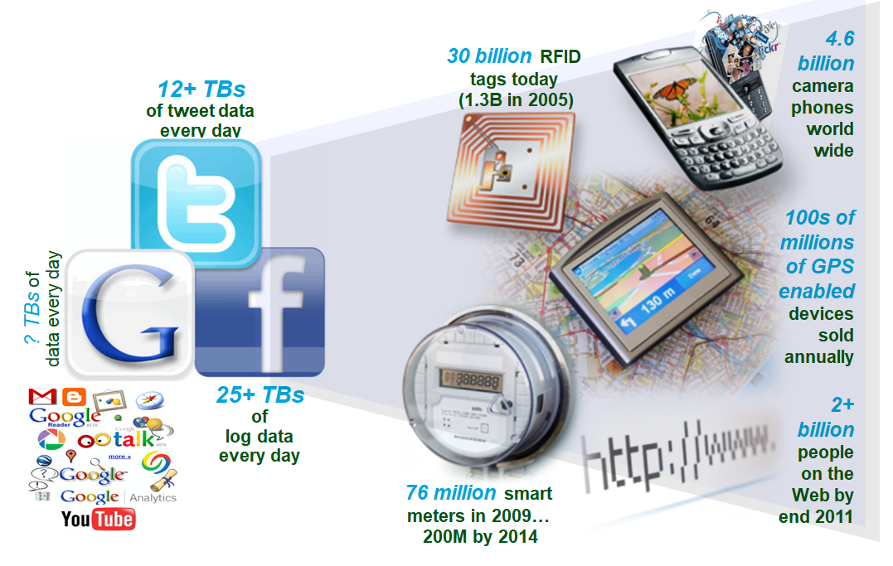
Source: www.cs.kent.edu/~jin/BigData/Lecture1.pptx
Simple activities like listening to music or reading a book are now generating data. Digital music players and eBooks collect data on our activities. Your smartphone collects data on how you use it and your web browser collects information on what you are searching for. Your credit card company collects data on where you shop and the shops collect data on what you buy. It is hard to imagine any activity that does not generate data.
Our conversations are now digitally recorded. It all started with emails, but nowadays most of our conversations leave a digital trail. Consider all the conversations we have on social media sites like Facebook or Twitter. Even many of our phone conversations are now digitally recorded.
Think about all the pictures we take on our smartphones or digital cameras. We upload and share hundreds of thousands of them on social media sites every second. An increasing number of cameras record video images, and we upload hundreds of hours of video to YouTube and other platforms every minute.
Source: http://de.slideshare.net/BernardMarr/140228-big-data-slide-share/3-The_basic_idea_behind_the
We are increasingly surrounded by sensors that collect and share data. Take your smart phone, it contains a global positioning sensor to track exactly where you are every second of the day, it includes an accelometer to track the speed and direction at which you are travelling. We now have sensors in many devices and products.
We now have smart TVs that are able to collect and process data, we have smart watches, smart fridges, and smart alarms. The Internet of Things, or Internet of Everything connects these devices so that e.g. the traffic sensors on the road send data to your alarm clock which will wake you up earlier than planned because the blocked road means you have to leave earlier to make your 9am meeting.
Source: http://de.slideshare.net/BernardMarr/140228-big-data-slide-share/3-The_basic_idea_behind_the
Source: www.cs.kent.edu/~jin/BigData/Lecture1.pptx
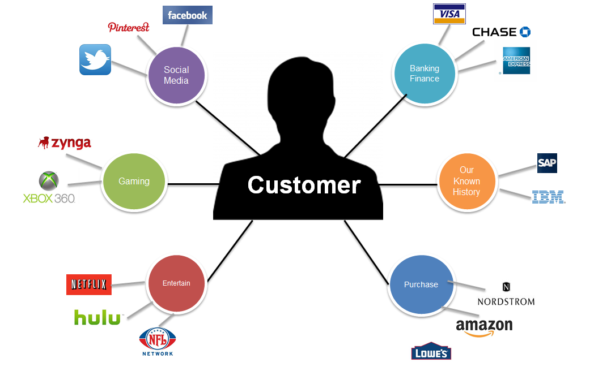
Source: www.cs.kent.edu/~jin/BigData/Lecture1.pptx
Source: www.cs.kent.edu/~jin/BigData/Lecture1.pptx
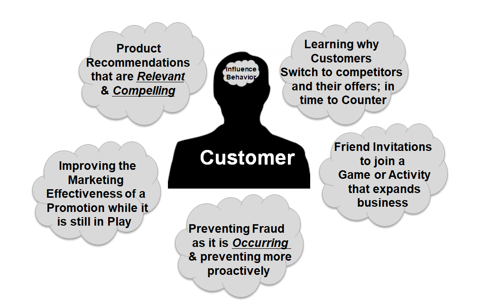
Source: www.cs.kent.edu/~jin/BigData/Lecture1.pptx
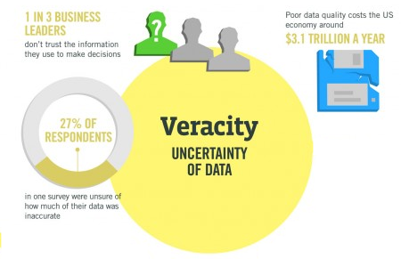
Organizations must now analyze both structured and unstructured data that is uncertain and imprecise.
In many cases, it is not known whether the data is correct (e. g. fake news) or representative (e. g. biased expressions of opinion in forums).
It may be prudent to assign a Data Veracity score and ranking for specific data sets to avoid making decisions based on analysis of uncertain and imprecise data.
Companies expand their traditional data with social media data, browser, text analytics or sensor data to get a more complete picture of their customers.
Retailers are able to optimize their stock based on predictive models generated from social media data, web search trends, weather forecasts…
Use the data from smart watches, wearable devices, Google Trends, health research, electronic medical record to diagnose disease, predict epidemics, …
Use big data analytics to predict criminal activity, foil terrorist plots, detect cyber attacks, and detect fraudulent credit card transactions.
Optimize traffic flows based on real time traffic information, social media and weather data. A bus would wait for a delayed train and traffic signals predict traffic volumes.
Source: http://de.slideshare.net/BernardMarr/140228-big-data-slide-share/3-The_basic_idea_behind_the

Source: http://de.slideshare.net/BernardMarr/140228-big-data-slide-share/3-The_basic_idea_behind_the
Data Source Layer
This is where the data arrives at the organization. It includes everything from sales records, customer database, feedback‚ social media channels, marketing list, email archives etc.
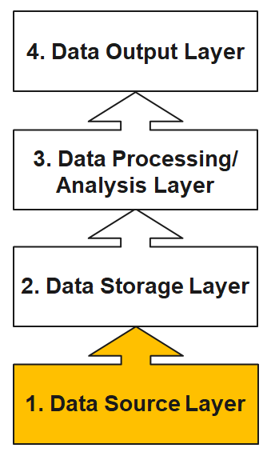
Source: http://de.slideshare.net/BernardMarr/140228-big-data-slide-share/3-The_basic_idea_behind_the
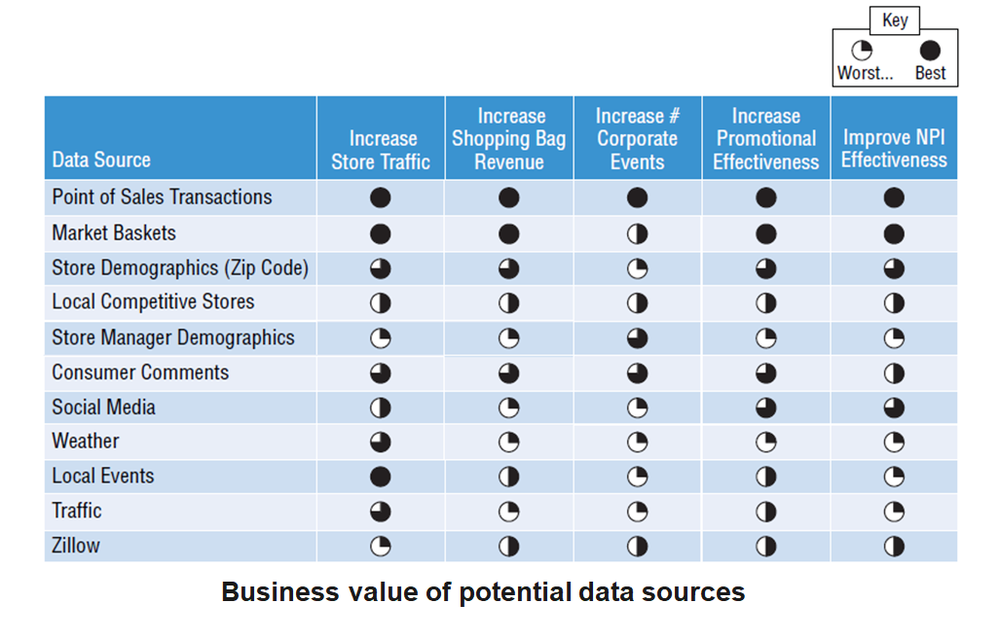
Source: Schmarzo (2016): Big Data MBA, p. 49
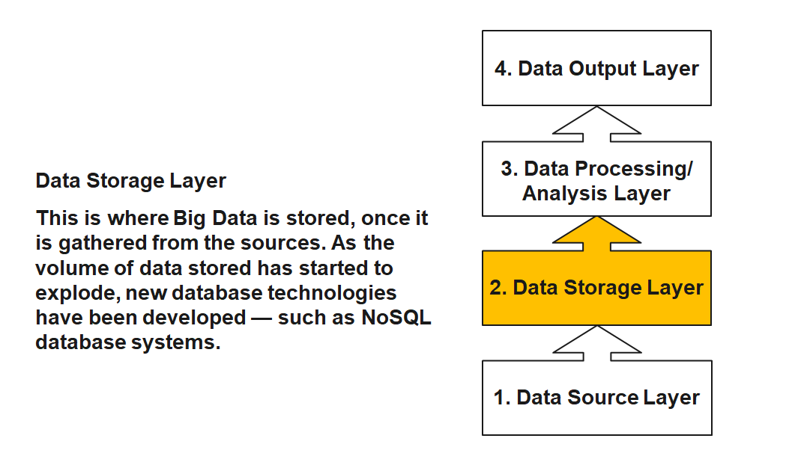
Source: http://de.slideshare.net/BernardMarr/140228-big-data-slide-share/3-The_basic_idea_behind_the
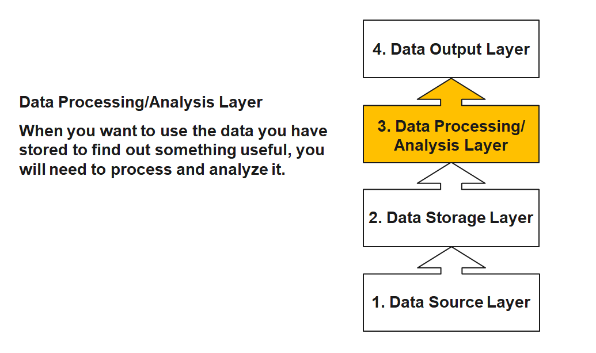
Source: http://de.slideshare.net/BernardMarr/140228-big-data-slide-share/3-The_basic_idea_behind_the
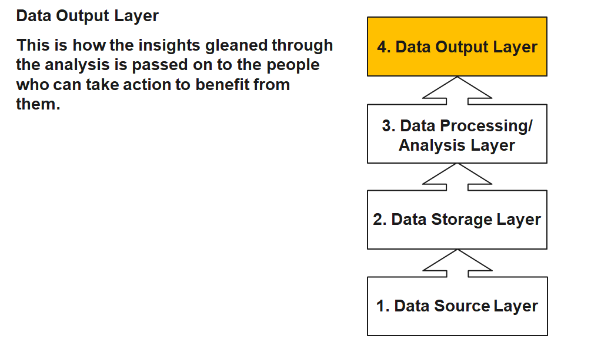
Source: http://de.slideshare.net/BernardMarr/140228-big-data-slide-share/3-The_basic_idea_behind_the
Instead of recording millions of transactions, todays organizations are recording billions of interactions. Companies are capturing more and more data that can open business opportunities and unlock new sources of value for organizations.
Companies are not able to store this data in data warehouses because it is of high volume, mostly raw and often not structured. As consequence, data lakes have emerged as an alternative approach. The intent is to capture enterprise data and load it in its raw form into a centralized, large, and inexpensive storage system.
In shifting from data warehouses to data lakes, it became important to decouple data movement from data transformation. Data movement (the “E” and “L” of ETL) is an operational task. Data transformation (the “T” of ETL) is a content-based, analytic-facing task that requires an understanding both of the data and how it’s to be used.
A clean separation between data movement and data transformation has the benefits of less friction because the instance loading the data isn’t responsible for transforming it.
Source: Trifacta: EOL for
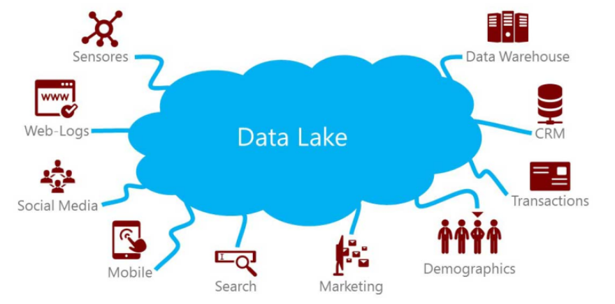
Source: https://www.pmone.com/fileadmin/user_upload/pics/other/Data_lake.jpg
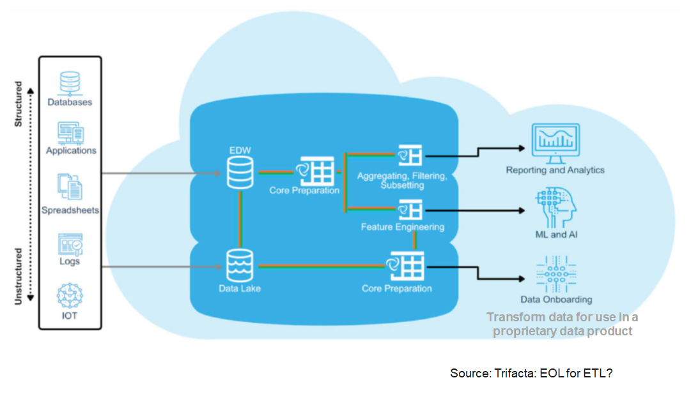
A “logical data warehouse” provides analytical company data without first physically moving it to a physical data warehouse.
As in a classic data warehouse, uniform views are provided for analysis purposes.
While the data in the classic data warehouse comes from a “well-defined” physically uniform database, the “logical data warehouse” pulls data together from the data lake at the time of the query.
Aggregation is done in just in time. Thus, the schema of the data warehouse is just virtual.
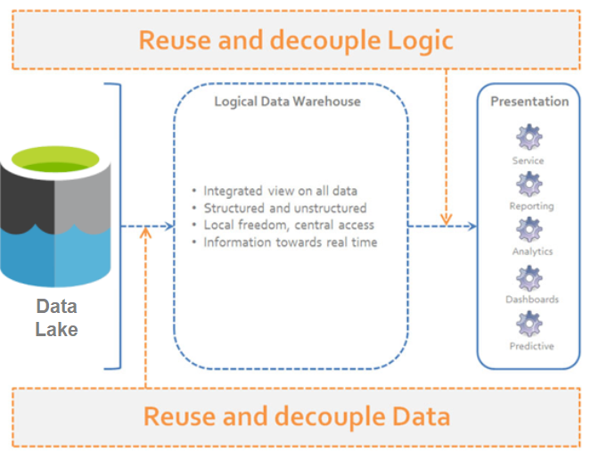
Source: http://www.datavirtualizationblog.com/emergence-logical-data-warehouse/